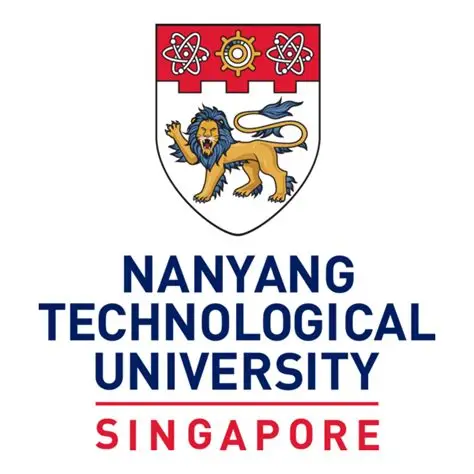
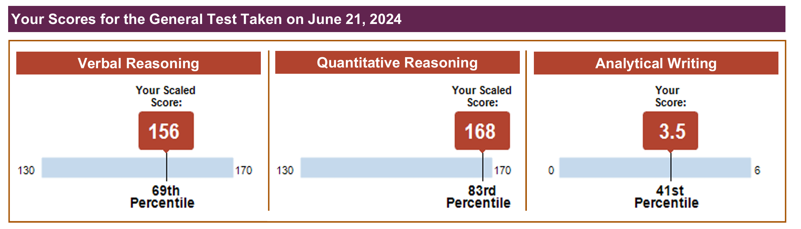
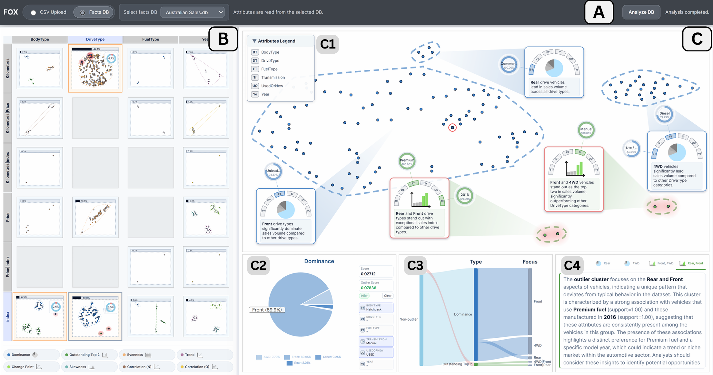
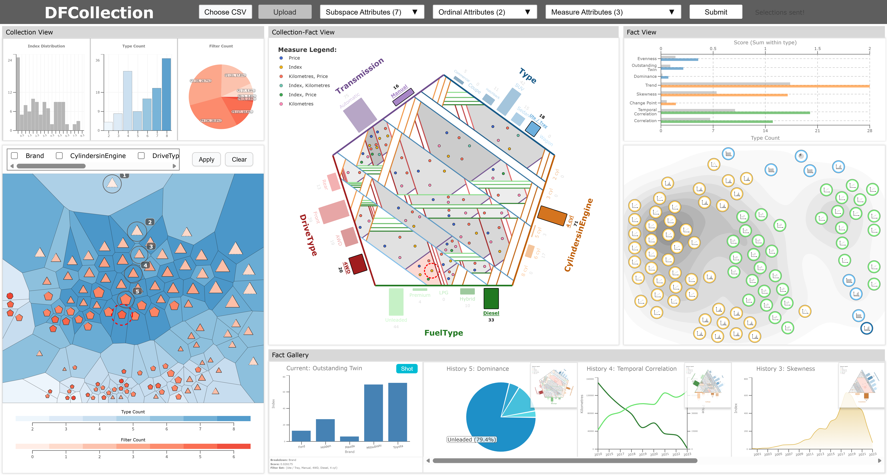
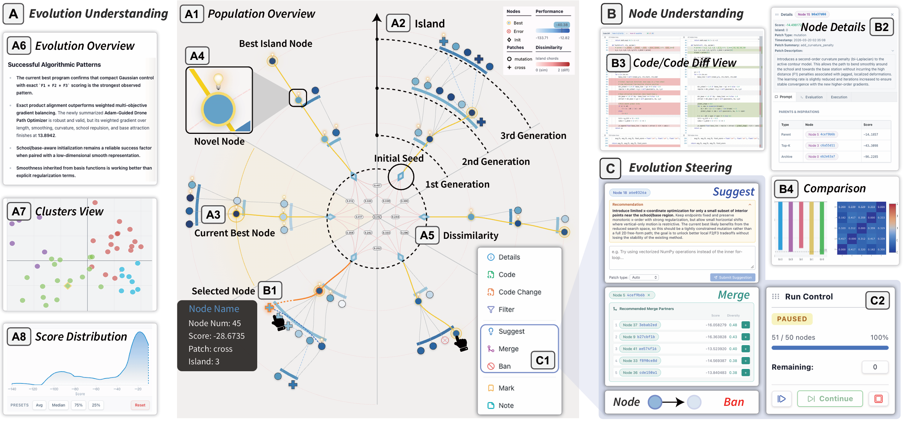
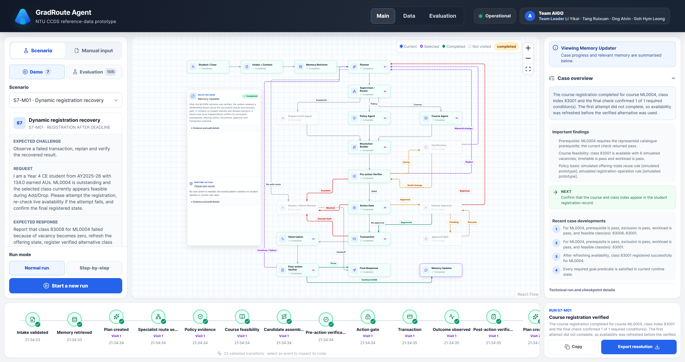
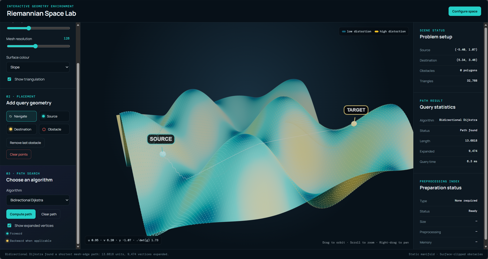
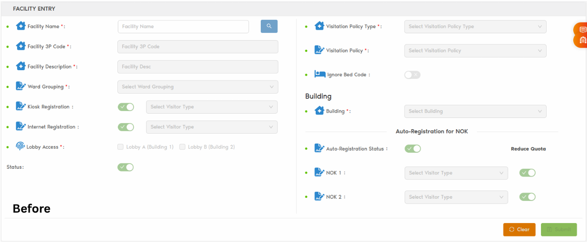

About Me
I am a Year 4 Computer Science undergraduate in the College of Computing and Data Science at Nanyang Technological University. I currently hold a CGPA of 4.78/5.00 and am on track for Highest Distinction. I also achieved a Graduate Record Examination score of 324/340, including 168 in Quantitative Reasoning.
My research experience spans visual analytics, human–AI collaboration, intelligent data systems, and database technologies. Through NTU's URECA programme under the supervision of Prof. Yong Wang, I contributed to DFCollection for scalable hierarchical data-fact exploration, FOX for visual exploration of data-fact outliers, and EvoMaestro for interpretable and steerable LLM-driven program evolution. These projects have led to publications accepted by Visual Informatics, IEEE VIS 2026, and ACM UIST 2026, respectively.
I am currently conducting collaborative research through Fudan University's Xiyuan Project under the supervision of Prof. Yong Wang and Prof. Ye Guangnan. My work includes FactorTriad, reinforcement-learning-based alpha factor generation, and UniStock, a unified framework for stock selection based on spatio-temporal dynamic modeling. Following my eight-week Summer Research Program at HKUST under the supervision of Prof. Raymond Chi-Wing Wong, I continue collaborating on natural-language querying over NoSQL databases, including schema compression, benchmark design, and query evaluation. From January to April 2027, I will also serve as a part-time Research Intern at A*STAR ARTC, focusing on image-data management, LLM-assisted querying, and research analytics.
Beyond my academic research, I led a four-person team to the semifinals of the SimplifyNext Agentic AI Hackathon, where we developed GradRoute Agent, a grounded agentic system for course-registration cases. My professional internship at Centricore gave me hands-on experience developing and maintaining production-level full-stack enterprise systems. I am particularly interested in pursuing PhD research in database systems and interdisciplinary directions at the intersections of databases, artificial intelligence, human-computer interaction, and visualization. I welcome opportunities to connect with prospective supervisors and research collaborators.
News
-
28 Oct 2026
Our paper DFCollection was accepted by Visual Informatics for publication in 2027!
-
9 Sep 2026
Led our four-person team to the semifinals of the SimplifyNext Agentic AI Hackathon with GradRoute Agent!
-
9 Aug 2026
Our paper EvoMaestro received final acceptance at ACM UIST 2026!
-
7 Aug 2026
Completed the eight-week HKUST Summer Research Program under Prof. Raymond Chi-Wing Wong!
-
16 Jul 2026
Our paper FOX received final acceptance at IEEE VIS 2026!
-
11 Jun 2026
Arrived in Hong Kong to begin the eight-week HKUST Summer Research Program!
-
7 May 2026
End the Year 3 Semester 2!
-
1 Apr 2026
Submitted the EvoMaestro to UIST and FOX to VIS!
-
31 Mar 2026
Receive the offer of NUS IRIS program!
-
11 Mar 2026
Received an offer for the HKUST Summer Research Program under Prof. Raymond Chi-Wing Wong!
-
5 Dec 2025
Completed the Professional Internship as Software Engineer at Centricore!
-
9 Nov 2025
Completed research on data visualization and development of the DFCollection system!
-
8 Aug 2025
Started my second URECA project, focusing on machine learning and genetic algorithms!
-
21 July 2025
Commenced my Professional Internship at Centricore!
-
15 June 2025
Started the Summer Program at the University of Tokyo!
Education
Nanyang Technological University
Majoring in Computer Science at CCDS with a current CGPA of 4.78 (Y1S1–Y3S2), on track for Highest Distinction.

Graduate Record Examination
Achieved a total score of 324/340, with 156 in Verbal Reasoning, 168 in Quantitative Reasoning, and 3.5 in Analytical Writing.

Publications
-

-

DFCollection: Scalable and Hierarchical Visual Exploration of Data Facts
Accepted, Visual Informatics 2027 (JCR Q1)
-

EvoMaestro: Toward Interpretable and Steerable LLM-Driven Program Evolution
Accepted, ACM UIST 2026 (CORE A)
Manuscript in Progress
FactorTriad: Visual Exploration and Refinement of Alpha Factor Pools through Coordinated Views
Developing a visual analytics system for exploring alpha factor pools from structural, semantic, and behavioral perspectives through coordinated views, tailored similarity measures, and cross-space comparisons.
Reinforcement Learning for Interpretable Alpha Factor Generation (working title)
Developing structure-aware reinforcement learning for formula editing with dimension-consistent action masks, uncertainty-guided exploration, duplicate-aware learning, parallel evaluation, and interactive trajectory visualization.
UniStock: A Unified Framework for Stock Selection based on Spatio-Temporal Dynamic Modeling
Developing a unified quantitative stock-selection framework that combines decoder-only or encoder-only time-series pretraining with dynamic hypergraph attention-based spatio-temporal fine-tuning. UniStock supports flexible input and prediction horizons, dynamically models relationships across stock pools, and is evaluated on long-term A-share and S&P 500 datasets.
Natural-Language Querying over NoSQL Databases (working title)
Contributing to benchmark design and query-accuracy evaluation for natural-language interfaces to NoSQL databases across diverse query conditions.
Internship & Programs
A*STAR Advanced Remanufacturing and Technology Centre (ARTC) — Research Intern (Part-time)
- The internship will focus on image data management and processing pipelines under the supervision of Dr. Zhang Yuzhe.
- Planned work includes integrating LLM-assisted natural-language querying and analytics for efficient data retrieval, exploration, and research analysis.
- I will build supporting software systems for image-data processing and research workflows.
Fudan University — Xiyuan Project (FDUROP / FYP)
- Conducting collaborative research under the supervision of Prof. Yong Wang and Prof. Ye Guangnan, focusing on intelligent alpha factor generation and refinement.
- Developing FactorTriad, a visual analytics system for interpretable exploration and refinement of alpha factor pools through structural, semantic, and behavioral perspectives.
- Developing reinforcement-learning-based factor generation through structure-aware formula editing and interactive trajectory analysis.
- Contributing to UniStock, a unified quantitative stock-selection framework combining time-series pretraining with dynamic hypergraph-based spatio-temporal modeling to support flexible prediction horizons and dynamic stock pools.
The Hong Kong University of Science and Technology — Summer Research Program
- Completed an eight-week summer research program under the supervision of Prof. Raymond Chi-Wing Wong.
- Studied Riemannian spaces and graph-based representations of curved manifolds for shortest-path computation and simulation.
- Implemented and benchmarked Dijkstra, ALT, Contraction Hierarchies, Hub Labeling, and H2H, comparing preprocessing cost, query performance, memory usage, and search-space expansion.
- Developed an offline schema-tree compression workflow for 11 datasets, reducing prompt-token usage while preserving query-relevant structure for natural-language querying of NoSQL databases.
- Continuing collaborative research on benchmark design, query accuracy, and evaluation of improved natural-language querying approaches for NoSQL databases.
Nanyang Technological University — URECA (2nd)
- Conducted two research projects under the supervision of Prof. Yong Wang and research staff member Liang.
- Contributed to EvoMaestro, an interpretable and steerable system for LLM-driven program evolution, accepted at ACM UIST 2026.
- Contributed to FOX, a visual analytics system for exploring data-fact outliers, accepted at IEEE VIS 2026.
Centricore (S) Pte. Ltd. – Junior Software Engineer
- Worked on full-stack development using React, TypeScript, Node.js, and SQL Server.
- Improved Azure authentication workflows and integrated public-key–based validation.
- Built an automated email notification service using AWS SES.
- Delivered a complete Blacklist & Whitelist report page, including UI, backend API, and SQL queries.
- Supported feature migration across hospital Visitor Management Systems.
- Debugged, enhanced, and maintained production-level code in a large enterprise system.
The University of Tokyo — Global Unit Courses (GUC)
- Completed an intensive course on cosmology and computational scientific analysis.
- Served as team leader for a course project involving astronomical data exploration through programming and statistical methods.
- Coordinated the team, presented the findings, and achieved a final grade of A.
Nanyang Technological University — URECA (1st)
- Participated in NTU's Undergraduate Research Experience on Campus (URECA), focusing on exploratory data analysis and visual analytics.
- Proposed DFCollection, a data-fact collection approach for improving clustering and hierarchical exploration.
- Contributed to the design and implementation of a scalable visual analytics system for structured data-fact exploration.
Projects

GradRoute Agent Semifinalist
Led a four-person team to build a grounded agentic AI prototype for resolving course-registration adjustments, exceptions, and escalations using NTU CCDS reference data. GradRoute Agent coordinates specialist checks, verification stages, and human approval checkpoints before presenting an explainable outcome. The project reached the semifinals of the SimplifyNext Agentic AI Hackathon.
View project
Riemannian Space Shortest-Path Simulation
Developed an interactive system for computing and simulating shortest paths on discretized Riemannian spaces. The system compares non-indexed and indexed approaches, including Dijkstra, ALT, Contraction Hierarchies (CH), Hub Labeling, and H2H. This project was completed under the supervision of Prof. Raymond Chi-Wing Wong.
View project
NUHS VMS
During my internship at Centricore, I contributed to the National University Health System's enterprise Visitor Management System using React, TypeScript, Node.js, and SQL Server. My work included improving Azure authentication and public-key validation, integrating AWS SES email notifications, delivering a complete Blacklist & Whitelist reporting workflow across the UI, backend API, and database, and supporting feature migration and production maintenance across hospital deployments. Further implementation details remain business confidential.
View projectExperience
SimplifyNext Agentic AI Hackathon — Team Leader
Led a four-person team in developing GradRoute Agent, a grounded prototype for resolving course-registration adjustments, exceptions, and escalations. Designed a controlled workflow with specialist routing, verification stages, human approval checkpoints, and optional Amazon Bedrock reasoning, advancing to the hackathon semifinals.
IET Liaison Manager
Served as Liaison Manager for the Institution of Engineering and Technology (IET). Organized guest lectures and networking events connecting students with industry professionals, including the IET CrossCampus Connect initiative between UOSM and PSB Academy, and coordinated a Mediacorp industry sharing session in October 2025.
Skills
Programming
Python, Java, JavaScript, SQL, C, and C++
Databases
Microsoft SQL Server, MongoDB, SQLite, PostgreSQL, and MySQL
AI & Data Analytics
LLM-assisted querying, agentic AI systems, reinforcement learning, visual analytics, and knowledge discovery
Cloud & Development Tools
Microsoft Azure, AWS SES, VS Code, Visual Paradigm, and Microsoft Office